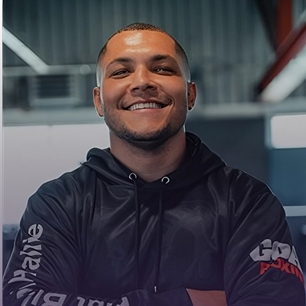

Escalada
Avançado
Com experiência em escalada indoor e ao ar livre, ajudo iniciantes e praticantes avançados a evoluírem suas técnicas de segurança, força e estratégia na parede.
Ver perfil completo